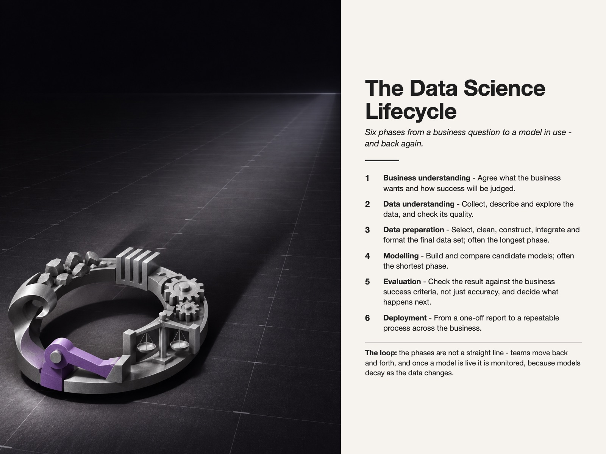

Style Vault / Board / Measured Object Shadow
Measured Object Shadow
SV-023

Example: The data science lifecycle, set in Measured Object Shadow
In plain words
A single cut-metal object sits low in a dark frame under hard light, casting a shadow that starts narrow and sharp and widens and softens toward the horizon, with one plum-violet accent. It feels calm, forensic and expensive. What makes it this style is the measured widening shadow, which shows how a small thing grows into a large consequence. Best for: risk exposure over time; forecast uncertainty; governance decision impact; single KPI board slide. Avoid: no artist name in prompts.
Topics it fits
- Risk exposure over timethe shadow widening from narrow to broad shows a small risk growing into a large exposure
- Forecast uncertaintythe shadow that softens with distance is a direct picture of a confidence band widening into the future
- Governance decision impactone object and its long consequence frame a board decision as cause and measured effect
- Single KPI board slidethe single accent colour on a dark field leaves room for one number to carry the meaning
Art style and layout
- core locked [physical_material, hard_directional_light, measured_shadow, palette_rule, composition]
- medium staged still-life photograph illusion built from SVG - matte surface, cut-metal object, real-light fall-off, visible grain
- physical material one small freestanding object with credible edge thickness, weight, contact shadow, and hard-lit face
- geometry low oblique planning plane receding in perspective; ruled measurements stay legible through the shadow
- hard directional light one raking light creates a crisp near shadow that softens with distance; no ambient studio softness
- measured shadow SIGNATURE: the object's shadow changes into a quantified shape - widening along a ruled horizon so the metaphor reads as data, not hidden truth
- shadow behavior narrow and high-contrast at the object; progressively wider, lighter, and softer toward the far horizon
- color strategy monochrome material world plus one chromatic accent; accent marks the downstream commitment, never the point estimate
- palette rule Near-black and graphite tonal family + one plum-violet #A77CFF accent. No second hue. Neutral light values are material highlights, not an added color code.
- palette [near-black "#0C0B10, graphite "#2C2832, metal silver "#D7D2D9, plum-violet "#A77CFF]
- object subject tunable - a number, decision token, model output, or other crisp executive deliverable
- pose blocking object sits small in the near foreground; its shadow travels away from the viewer and dominates the field
- context environment tunable ruled surface - quarter grid, month axis, planning board, risk scale, or operational timeline
- far marker one small physical marker inside the widest, softest part of the shadow; this is the only accent-bearing object
- lighting forensic hard light, long fall-off, visible grain, deep black values, controlled specular edge on the object
- composition portrait 4:5, low oblique view, object in lower-left third, shadow fans toward upper-right, bottom-anchored caption
- negative space large dark field around the object and fan; no decorative props
- typography one restrained editorial sans line at the bottom; tabular numerals on the object; tiny measurement labels only
- hierarchy shadow size mismatch lands first, crisp number second, far commitment marker third, caption last
- mood calm, forensic, expensive, consequential without doom
- era reference constructed-object music-poster photography and late-modernist editorial still life; no artist name in generation prompts
What must stay, what may change
subject (ten maximally different categories)
As JSON
Paste this into a prompt or a skill to reuse the style.
{
"id": "SV-023",
"name": "Measured Object Shadow",
"audience": [
"board"
],
"category": [
"data-viz",
"infographic",
"graphic-design"
],
"format": [
"data-portrait",
"infographic",
"deck"
],
"maker": "design-build",
"keep_and_swap": "subject (ten maximally different categories)",
"style_dna": {
"core_locked": "[physical_material, hard_directional_light, measured_shadow, palette_rule, composition]",
"medium": "staged still-life photograph illusion built from SVG - matte surface, cut-metal object, real-light fall-off, visible grain",
"physical_material": "one small freestanding object with credible edge thickness, weight, contact shadow, and hard-lit face",
"geometry": "low oblique planning plane receding in perspective; ruled measurements stay legible through the shadow",
"hard_directional_light": "one raking light creates a crisp near shadow that softens with distance; no ambient studio softness",
"measured_shadow": "SIGNATURE: the object's shadow changes into a quantified shape - widening along a ruled horizon so the metaphor reads as data, not hidden truth",
"shadow_behavior": "narrow and high-contrast at the object; progressively wider, lighter, and softer toward the far horizon",
"color_strategy": "monochrome material world plus one chromatic accent; accent marks the downstream commitment, never the point estimate",
"palette_rule": "Near-black and graphite tonal family + one plum-violet #A77CFF accent. No second hue. Neutral light values are material highlights, not an added color code.",
"palette": "[near-black \"#0C0B10, graphite \"#2C2832, metal silver \"#D7D2D9, plum-violet \"#A77CFF]",
"object_subject": "tunable - a number, decision token, model output, or other crisp executive deliverable",
"pose_blocking": "object sits small in the near foreground; its shadow travels away from the viewer and dominates the field",
"context_environment": "tunable ruled surface - quarter grid, month axis, planning board, risk scale, or operational timeline",
"far_marker": "one small physical marker inside the widest, softest part of the shadow; this is the only accent-bearing object",
"lighting": "forensic hard light, long fall-off, visible grain, deep black values, controlled specular edge on the object",
"composition": "portrait 4:5, low oblique view, object in lower-left third, shadow fans toward upper-right, bottom-anchored caption",
"negative_space": "large dark field around the object and fan; no decorative props",
"typography": "one restrained editorial sans line at the bottom; tabular numerals on the object; tiny measurement labels only",
"hierarchy": "shadow size mismatch lands first, crisp number second, far commitment marker third, caption last",
"mood": "calm, forensic, expensive, consequential without doom",
"era_reference": "constructed-object music-poster photography and late-modernist editorial still life; no artist name in generation prompts"
},
"elements": {
"subject": "one cut-metal object, staged",
"composition": "low oblique view, object in the lower-left third, its shadow fanning toward the upper right, large dark field around it, no props",
"light": "forensic hard light, long fall-off, deep black values, one controlled specular edge on the object",
"palette": "near-black and graphite tonal family plus one plum-violet accent. No second hue",
"material/texture": "matte surface, cut metal, real light fall-off, visible grain",
"mood": "calm, forensic, expensive, consequential without doom",
"camera/render": "staged still-life photograph, shadow narrow and hard at the object then progressively wider and softer toward the horizon"
},
"palette_hex": [
"#0c0b10",
"#2c2832",
"#d7d2d9",
"#a77cff"
],
"topics": [
{
"topic": "Risk exposure over time",
"why": "the shadow widening from narrow to broad shows a small risk growing into a large exposure"
},
{
"topic": "Forecast uncertainty",
"why": "the shadow that softens with distance is a direct picture of a confidence band widening into the future"
},
{
"topic": "Governance decision impact",
"why": "one object and its long consequence frame a board decision as cause and measured effect"
},
{
"topic": "Single KPI board slide",
"why": "the single accent colour on a dark field leaves room for one number to carry the meaning"
}
]
}